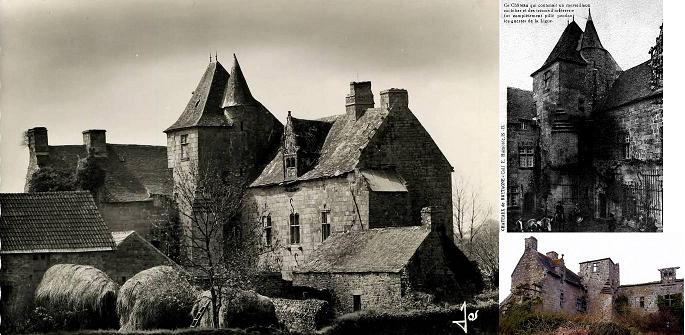
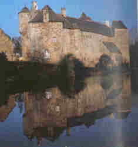
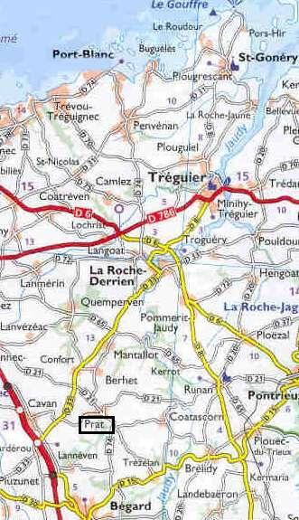
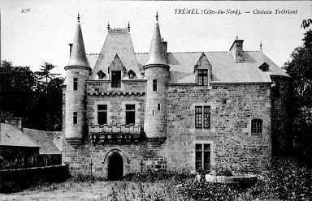

La Fontenelle
Dialecte de Tréguier
|
- Sous forme manuscrite : . par De Penguern t. 90: "Feuntenella" (Taulé, 1857), publié dans la revue "Gwerin" N°6 et dans "Al Liamm" 29, 1951; t.94, 202 "Fantanellan" - Publié dans des recueils: . par Fréminville dans ses "Antiquités des Côtes du Nord": "Fontanelle a barous Prat" (Lannion) et "Fontenelle an eus grêt lé" (Tremel), rec. par le Comte de Kergariou . . par Luzel, dans "Gwerzioù 2", "Fontenella a barous Prat", Plouaret, 1864; "Fontenella en-deus gret le" (=versions Kergariou); Variante ). - Publié dans des périodiques : . par Anatole Le Braz, dans la "Revue celtique" (1896), "Feuntenella" (Port-Blanc, 1895, fragment). |
 |
- In handwritten form : . By De Penguern t.90: "Feuntenella" (Taulé, 1857), published in the periodicals "Gwerin" N°6 and "Al Liamm" 29, 1951; t.94, 202 "Fantanellan" - Published in printed collections: . by Fréminville in his "Antiquités des Côtes du Nord" as "Fontanelle a barous Prat" (Lannion) and as "Fontenelle an eus grêt lé" (Tremel), collected by Comte de Kergariou. . by Luzel, in his "Gwerzioù 2", "Fontenella a barous Prat", Plouaret, 1864; "Fontenella en-deus gret le" (=versions Kergariou); Variant). - Published in periodicals : . by Anatole Le Braz, in "Revue celtique" (1896), "Feuntenella" (Port-Blanc, 1895, as a fragment). |
Ton
(Sol majeur)
| Français | English |
|---|---|
|
1. A Prat La Fontenelle était Fort renommé pour sa beauté, Il vola des bras de sa nourrice Une héritière unique et riche. 2. - L'héritière, dites-moi donc, Que cherchez-vous dans ce buisson? - Pour offrir à mon frère de lait, Des fleurs d'été pour un bouquet. 3. Oui, je cherche des fleurs d'été Pour mon gentil frère de lait. Et j'éprouve une crainte mortelle De voir surgir La Fontenelle. 4. - C'est un nom qu'on entend partout. Vous-même le connaissez-vous? - Ma foi, non, je ne le connais point. Mais personne n'en dit du bien. 5. On n'en dit pas beaucoup de bien, On prétend que c'est un coquin Qui fait les filles prisonnières... - Oui, mais surtout les héritières. - 6. Voilà qu'il la prit dans ses bras, La serra fort et l'installa En croupe et qu'il partit aussitôt, Faisant route vers Saint-Malo. 7. A Saint-Malo pendant des mois Dans un couvent il l'enferma. Le jour même de ses quatorze ans, Il la délivre en l'épousant. II 8. Au manoir de Coadélan, Elle mit au monde un enfant, Un fils mignon tout aussi beau qu'elle Ou son père, La Fontenelle. 9. Un beau jour il reçut un pli: Il fallait qu'il aille à Paris. - Vous resterez à Coadélan. Je pars pour Paris à présent. 10. - Seigneur, je vous en prie, restez Je vais payer un messager. Si vous partez, vous êtes perdu, Et ne reviendrez jamais plus. 11. - Mais n'ayez pas peur, je vous dis. Non, j'irai moi-même à Paris. Vous, prenez bien soin de notre enfant, Tant que vous me verrez absent. - 12. Puis La Fontenelle a promis Aux jeunes gens lorsqu'il partit: - Je ferai don d'une bannière A Notre -Dame du Rosaire. 13. Une bannière, un beau manteau Si vous ne m'oubliez bientôt, Si vous prenez soin de mon enfant Qui demeure à Coadélan. III 14. - Sire le Roi, Reine, bonjour. Je comparais à votre cour. - Vous avez bien fait de venir, mais D'ici vous ne ressortirez. 15. - Pourquoi ne partirai-je pas? Nous verrons bien, Sire le Roi! Mon cheval, faites-le préparer, Que je puisse m'en retourner! 16. - Aller à Coadélan, ça non! Vous irez plutôt en prison. J'ai tout ce qu'il faut pour enchaîner Au moins deux ou trois prisonniers. 17. - Petit page, entends mon invite, A Coadélan rends-toi vite! Et tu diras à ma pauvre belle Qu'elle renonce à la dentelle. 18. A la dentelle à tout jamais: Son pauvre époux est en danger. Rapporte-moi de quoi me vêtir, Et un drap pour m'ensevelir. 19. Une camisole de lin Et un linceul blanc, je dis bien. Et de plus un grand plateau doré Où sera mon crâne exposé. 20. Cette mèche en signe de deuil, Tu l'accrocheras à mon seuil, Qu'en allant à la messe tous prient Dieu de pardonner au marquis. 21. - Des cheveux, tant que vous voudrez. Du plat d'or on peut se passer: Sa tête, sur le pavé roulant, Servira de boule aux enfants. - 22. Le petit page tout tremblant Arrivant à Coadélan Dit: - Bonjour, vous allez, héritière, Mieux que votre mari, j'espère! 23. Une chemise il lui faudrait, Et un drap pour l'envelopper, De même qu'un grand plateau doré Où son crâne sera montré. - IV 24. Les Parisiens se demandaient Ce qui pouvait s'être passé Pour qu'une dame, de loin venue, Fasse tant de bruit dans la rue. 25. - L'héritière de Coadélan, Dans son habit vert et bouffant, Si elle savait ce que je sais, Un habit noir elle mettrait. 26. - Sire on dit qu'il ne tient qu'à vous, Que me soit rendu mon époux! - Son corps ne vous sera pas livré. Trois jours déjà qu'on l'a roué. - 27. Celui qui vient à Coadélan, C'est un deuil profond qu'il ressent, Un sentiment vague et douloureux Lorsqu'il voit ce foyer sans feu. 28. Qu'il voit croître partout l'ortie, Du seuil au tréfonds du logis, Et dans le grand salon principal Des mécréants mèner le bal. 29. Et les pauvres gens en passant, Remplis de découragement, Disent, versant une larme amère: - Les pauvres ont perdu leur mère! |
1. La Fontenelle, native of Prad, The finest son in man's garb clad, Was so impudent as to kidnap An heiress still on nurse's lap. 2. - O little heiress, what is it You're looking for here in this ditch? - Fine summer flowers to make a bunch My foster-brother likes them much. 3. My foster-brother whom I love Will like them, I am sure thereof. But I quake and quiver and I fear Lest La Fontenelle would come near. 4. - O little heiress, tell me now If this La Fontenelle you know? - No I don't know him but I have heard Them say against him many words. 5. About him, I think, nobody Would have a sole good word to say. They say he's an abductor of girls - Yes, of heiresses, above all! - 6. And he has seized her in his arms Taking care to do her no harm, He got her on his horse's pillion And to Saint Malo he rode on. 7. To Saint-Malo he took her and He put her into a convent, And the day she was fourteen years old, As to marry her was so bold. II 8. They went to Manor Coadélan Where she has born a little son, A son as fair as the summer sky, Or as La Fontenelle, his sire. 9. La Fontenelle was once summoned By letter to Paris to come - I'm going to leave you alone here I must go to Paris, my dear . 10. - La Fontenelle, please, at home stay. A messenger for you I'll pay. In God's name! I am filled with concern: If you go there, you won't return. 11. - There is no reason to worry I shall go, myself, to Paris. You just take care of my little son As long as I am far from home. 12. La Fontenelle said, that morning, To the young people on leaving: - I 'll give a banner to Saint Mary Our Lady of the Rosary 13. A banner and a robe as well That she may guard La Fontenelle And take great care of his litle son Till he returns to Coadélan. - III 14. - God keep my King and Queen in grace Whom I visit in their palace. - To come to us you may have found smart, But now from here you shan't depart. 15. - But I mean to go home again Or to the court I shall complain. Order that my charger be harnessed, Sire, or I shall seek redress. 16. - Back to Coadélan you shan't go But to jail, as far as I know. Since there are here chains sufficiently To chain up rebels, two or three. 17. - Pageboy, pageboy, you're true and fair, Quick, back to Coadélan repair! And tell the unfortunate heiress She must give up clothes trimmed with lace. 18. She must give up clothes trimmed with lace Since her poor husband is distressed. A shirt for me to don you shall bring And a white shroud to wrap me in. 19. With the white linen shirt you should Bring me a large white linen shroud, As well as a large golden plate Where my head on show will be placed. 20. And this lock of my hair you'll take To hang out on Coadélan's gate: The people while going to mass may See it and for the marquess pray. 21. - Hair as much as you will you take, But there's no need for a gold plate. Your head on the pavement shall roll And children shall play with it bowls. - 22. When he reached home in Coadelan The page said in salutation: - How fares it with you , Lady Heiress? Better than with the lord, I guess. 23. He want a white shirt for clothing And a shroud to be wrapped up in And furthermore a large plate of gold So that all may his head behold. IV 24. The Parisians were much surprised Hearing of a girl just arrived From far away who disturbed the peace And made a great row in the streets. 25. - It is the Coadélan heiress Who wears a green and ample dress, But if she knew what I know, I think, She would wear clothes as black as ink. - 26. - Lord King, Lord King, listen to me, Give me back my husband fairly. -It's impossible, he was for real Three days ago put to the wheel. - 27. To Coadélan whoever had Come, truly could only be sad, Very sad at the distressing sight Of the hearth left devoid of fire 28. And of the nettle on the door That has overrun the ground floor, And of all the base mob, above all, That strut about in the great hall. 29. And all the poor that come that way Burst into tears, all in dismay, Burst into tears and they say in dread: - The mother of the poor is dead! |
Cliquer ici pour lire les textes bretons (versions imprimée et manuscrite).
For Breton texts (printed and ms), click here.

|
Résumé:
Pendant les guerres de Religion (1588-1598), Guy Eder de la Fontenelle, partisan de la Ligue , mit le pays à feu et à sang. Cette complainte raconte comment il enleva Marie de Coadélan, puis comment celle-ci tenta de sauver son époux de la décapitation. La Fontenelle et la Ligue On doit au Quimpérois, le Chanoine Jean Moreau (1552 - 1617) et à ses "Mémoires sur les guerres de la Ligue en Bretagne", beaucoup de ce que l'on sait sur La Fontenelle. Guy Éder de Beaumanoir de la Haye, dit la Fontenelle, né en 1573 dans l'ancienne paroisse de Bothoa, aujourd'hui en Saint-Nicolas-du-Pélem (35 km au sud de Guingamp) fut, comme l'écrit le chanoine, "chrétien de nom et turc en effet... parjure et perfide". (Je demande pardon à nos lecteurs turcs!) Il était issu d'une ancienne famille de Bretagne, qui résidait dans le manoir de Beaumanoir au Leslay, près de Quintin (Côtes-d'Armor). Ecolier à Paris au collège de Boncourt, il vendit ses livres et sa robe de chambre pour un poignard et une épée. Chef à quinze ans d'une bande de jeunes nobles, il avait profité de l'affaiblissement de l'autorité royale pendant la guerre de la Ligue, faisant d'abord semblant d'épouser le parti catholique, dont l'ambition principale était de renverser le roi Henri III et de placer les Guises sur le trône de France. Il offrit ses services au duc du Maine, lieutenant général de France à Orléans. Revenu dans son pays, il ravagea le Trégor et la Cornouaille et entra dans la légende par ses cruautés. Disposant d'une troupe de 400 cavaliers, il se livra à des meurtres, des massacres et des pillages sans nombre. Les mises à sac de Penmarc'h (dont il emmena les habitants avec tous leurs effets dans 280 barques) et de Pont-Croix lui avaient rapporté un énorme butin qu'il entassa dans l'île Tristan à Douarnenez dont il fit son quartier principal. En 1593 cette ville avait pris le parti de Mercœur, et le capitaine Guengat du parti du roi tenta de la surprendre par la mer avec quatre cents hommes de troupe qui furent aisément repoussés. En 1595 Guengat s'installa dans la petite île Tristan où il fut attaqué par La Fontenelle qui s'empara de ses biens et de sa personne, en vue d'obtenir une rançon. Il obligea les habitants du lieu à démolir leurs maisons pour édifier des fortifications pour son repaire. Assiégé par des milliers de paysans, commandés par un jeune gentilhomme, Du Granec, il en tue 1500 dans une même journée. La prise de l'Île Tristan, décidée par Henri IV fut une entreprise difficile. En 1599 les forts de Douarnenez et de l'Île-Tristan furent démolis sur l'ordre de Henri IV. La mort de La Fontenelle En 1598, La Fontenelle n'en fut pas moins compris dans le traité que Mercœur , le gouverneur de Bretagne dont le ralliement à la cause des ligueurs avait fait entrer le pays dans les guerres de religion, fit avec Henri IV et obtint le pardon du roi pour ses crimes. Il fut cependant accusé d'avoir participé à la conspiration du duc Charles de Biron (1562 - 1602) au profit du Duc de Savoie et des Espagnols et d'avoir promis de livrer à l'ennemi plusieurs places de la Bretagne. Le Parlement de Paris, ne trouvant pas de preuves assez fortes rappela ses premiers désordres: Ce sont ces faits et d'autres semblables qui le conduisirent, bien plus que le grief de haute trahison, au supplice de la roue. Il fut exécuté et rompu vif à Paris en place de Grève en septembre 1602. L'enlèvement de Marie Le Chevoir La présente "gwerz" publiée par La Villemarqué en 1845 narre l'enlèvement de Marie Le Chevoir de Coadélan , fille d'un marquis et riche héritière âgée de 8 ou 9 ans qu'il va chercher jusque dans la région de Brest. Il est vrai que La Fontenelle l'épousa et qu'elle se s'est revendiquée comme veuve lors de son procès. La Fontenelle renouvela ce crapuleux exploit et enleva le jeune Marie, héritière par son père et sa mère de neuf à dix mille livres de rente.  le château de Coatezlan ou Coatélan ou Coadélan (XVIème siècle), situé dans la paroisse de Prat (à mi-chemin entre Lannion et Guingamp, édifié par la famille Le Chevoir . Presque entièrement restauré, il a été en partie détruit par un incendie en 1989. Il possédait jadis une chapelle privée dédiée à saint Maudez et il a longtemps été propriété de la famille de Kergariou . Le château de Mézarnou, lui, fut, jusqu'à récemment, dans un état de délabrement avancé (cf illustration ci-dessus, cliché en bas, à droite et Pennherez al Lezhouarnao" ).La première chanson populaire bretonne collectée? Concernant ce texte, La Villemarqué indique, à partir de l'"argument" de 1846, qu'il le considère comme la première chanson bretonne jamais collectée. Il écrit: L'intérêt que Le comte Jean-François de Kergariou (1779 - 1849), ancien chambellan de Napoléon Ier et pair de France, né à Lannion en 1779, portait à ce chant vient de ce qu'il était propriétaire du château de Coadélan. Retiré à partir de 1830 dans sa propriété proche de Châtelaudren, il consacra ses loisirs à composer une collection malheureusement disparue aujourd'hui, mais dont on sait qu'elle comprenait deux versions du présent chant. L'enlèvement de la jeune Marie est, nous dit La Villemarqué dans l'"argument" de 1845, "le sujet de mille chansons populaires dont La Fontenelle est le héros" . Le Guide Gallimard "Finistère Nord", p.240, cite une "Complainte populaire" dont, malheureusement, il n'indique pas la source: "Quiconque suivra La Fontenelle Aura, quand il le voudra Les petites filles les plus jolies Pour aller dormir avec lui. Les ennemis de La Fontenelle Ne font pas long feu en ce monde. Un soldat de La Fontenelle Ne manquera jamais de rien." Cette multiplicité des versions est encore accrue par le "croisement" opéré par les chanteurs avec des chants. similaires. C'est ainsi que l'intercession de l'épouse auprès du couple royal semble avoir déteint sur les scènes analogues décrites dans Le Page de Louis XIII et Le chevalier Bran . On remarque en outre que la strophe 29 a inspiré plusieurs passages du chant La dame de Nizon . On trouvera quelques autres commentaires au sujet de ces chants, à propos des (dans laquelle La Fontenelle est sauvé par l'intervention de sa femme) |
Résumé:
During the Religion wars (1588-1598), Guy Eder de la Fontenelle, a supporter of the League , put the country to fire and the sword. This ballad relates how he abducted Marie de Coadélan, then how she endeavoured to save her husband from beheading.  The nefarious La FontenelleA great deal of what we know about La Fontenelle was reported by the Quimper Canon Jean Moreau (1552 - 1617) in his "Memoirs on the wars of the League in Brittany". Guy Eder de Beaumanoir de la Haye, also known as La Fontenelle, was born in 1573, in the parish Bothoa (today included in the town Saint-Nicolas-du-Pélem -Côtes d'Armor, 35 km south of Guingamp). As the canon wrote, "He was supposed to be a Christian, but in reality he was as cruel as a Turk" (I beg my Turkish visitors' pardon!). This very old Breton family resided at Beaumanoir Manorin Leslay near Quintin (Côtes d'Armor). When he was student at Boncourt college in Paris, he swapped his books and cassock for a dagger and a sword. Aged fifteen, he was at the head of a gang made up of a few young men of the nobility and availed himself of the royal authority being weakened by the war of the League, to pretend, at first, to support the Catholic party whose sole aim was to overthrow king Henry III 's government and to put the Guises on the throne of France. Therefore he joined the Duke of Maine, the General Lieutenant of the Kingdom in Orléans. Back to his homeland, he devastated the countryside around Tréguier and Quimper and became (in)famous for his cruelty. With his 400 troopers he committed numberless murders, slaughters and acts of pillage. The sacks of Penmarc'h (whose inhabitants with all their things were deported in 280 barges) and Pont-Croix (Finistère) earned him an enormous booty he hoarded in the Isle Tristan off Douarnenez that became his main operations basis. In 1593 this town had taken side with Mercœur, so that, on behalf of the king, Captain Guengat tried to capture it with a float. The four hundred soldiers who had embarked were easily driven back. In 1595 Guengat's second attempt was successful but he was attacked by La Fontenelle who seized him and his goods, in order to exact a ransom. The inhabitants of the island were made to pull down their own houses to provide material for his fortifications. Besieged by thousands of peasants, led by a young nobleman named Du Granec, he killed 1500 of them in a single day. The capture of Isle Tristan, decided by king Henry IV, was a difficult undertaking. In 1599 the forts of Douarnenez and Tristan Island were dismantled by order of Henry IV. La Fontenelle's death In 1598, La Fontenelle was nevertheless included in the treaty of amnesty agreed upon between Mercœur , the Governor of Brittany whose support of the League had caused the civil war to encroach on this province, and King Henry IV. Yet he was accused of partaking in the plot stirred up by the Duke of Biron (1562 - 1602) in support of the Duke of Savoy and Spain. He had allegedly promised to give over to the enemy several strongholds in Brittany. The Parliament of Paris, short of convincing proofs, invoked his former trespasses: For these facts and other atrocities of the same kind, far more than for high treason, he was put to the wheel on the Place de Grève ("Strand square"), in Paris, in September 1602. Mary Le Chevoir's abduction The present lament published by La Villemarqué in 1845 records the kidnapping by La Fontenelle of the 8 or 9 years old Marie Le Chevoir of Coadélan , the rich sole heiress (penn-herez) of a Marquess of the Brest area. It is true that he married her and that she interceded on his behalf during the trial. La Fontenelle followed this villainous example and kidnapped young Mary, who was to inherit from her father and mother a yearly income of ten thousand pounds. Is it the first collected Breton folk song? Concerning this text, La Villemarqué states, as from 1846 in the "argument" preceding this song, that he considers it the first ever collected Breton folk song: The interest Count Jean-François de Kergariou (1779 - 1849), former chamberlain to Napoléon I and Peer of France, born in Lannion in 1779, took in this song had a simple cause: he was the owner of Coadélan Castle. Retired as from 1830 in his estate next to Châtelaudren, he spent his spare time composing a collection, which, alas, is now irretrievably lost. It clearly included two versions of the present song. The abduction of young Marie is, according to La Villemarqué's statement in the "argument" preceding this song as from the 1845 edition, "the topic of a thousand folk songs featuring La Fontenelle as the protagonist". The Gallimard guidebook for "North-Finistère", on page 240, quotes a "folk lament", but omits to mention its origin: Will have enough and to spare Of most beautiful little girls To sleep with them in their beds. Whoever is Fontenelle's foe Will not stay for long here below. Whoever joins Fontenelle's men Will want for nothing forever. |
 |
This great number of versions is still increased by "crossbreed" with similar songs, carried out by singers. Besides, the unfortunate wife's intercession with the royal couple has indubitable similarities with scenes in The Page of Louis XIII and Knight Bran .
It is, moreover, noticeable that Verse 29 evidently inspired some verses of The Lady of Nizon .
Additional comments on these songs will be found in connection with
(In the latter version La Fontenelle's life is saved by his wife's intercession).
Version du Manuscrit de Keransker
Keransquer MS Version
| Français | Français | English | English |
|---|---|---|---|
|
L'essentiel du texte manuscrit se retrouve dans la version imprimée, avec cependant quelques omissions d'importance mineure:
(a) La dame répond au page: "S'il te plait, mon petit page, Toi qui es ..., Selle-moi ma jument blanche, Que nous allions à Paris sans tarder." La reine disait ce jour-là, à la porte de son palais: (b) Le roi lui répond: "Sa tête sera détachée et elle sera lancée dans le cimetière ". (c) Un fragment noté en marge ajoute cette note fantastique : "(Le roi) n'avait pas fermé la bouche qu'on y voyait un serpent au dard venimeux qui en sortait en se traînant, horrible, qui en sortait en se traînant, l'horreur, et qui vint lui piquer le cou!" |
(d) Dans un autre fragment, La Fontenelle dit au page de prendre une mèche de ses cheveux... "Pour attacher au porche de
Trébriant
, afin que les gens disent en allant à l'église, afin qu'ils disent, ces Trébriantais: 'Dieu bénisse le marquis!'" (A la strophe 20, "Trébriant" est remplacé par "Coadélan")
(*) Une note en français a trait à l'héritière de Coadélan qui était également dame du Grueret et de Trébriant et à l'enlèvement perpétré par La Fontenelle à Mézarnou. Un titre de propriété communiqué par le Comte de Trégariou, le propriétaire de l'époque de Coadélan, montre que l'héritière de Coadélan mourut 4 ans après son mari. (**) Une autre note en français précise les liens entre les Le Chevoir et le manoir de Mézarnou. |
Most of the handwritten text was used for the printed version, but here are some minor omissions:
(a) The lady answers the page: "Please, little page, who are..., Saddle my white mare, We are leaving for Paris immediately. The queen was standing in the door of her palace, that day." (b) The king answers her: "His head will be severed and it shall roll away about the churchyard ." (c) A fragment jotted down in the margin adds a fantastic touch to the narrative: "(The king) had not yet closed his mouth when a snake with poisonous sting slowly crept out, horrible to see, slowly crept out, horrible to see, and bit his neck!" |
(d) In another fragment, La Fontenelle orders the page to cut a lock of his hair... "To hang it on the gate of
Trébriant
manor, so that Trebriant people on their way to church may say 'God bless the Marquess!'" (In stanza 20, "Trébriant" is replaced with "Coadélan")
(*) A note in French refers to the Coadélan heiress who also was the Lady of the Grueret and Trébriant estates and to her being kidnapped by La Fontenelle at Mézarnou manor. A deed of property contributed to La Villemarqué by the then owner of Coadélan manor, the Count of Trégariou, shows that the Coadélan heiress died 4 years after her husband. (**) Another note in French gives additional information as to the links between the Le Chevoir family and Mézarnou manor. |